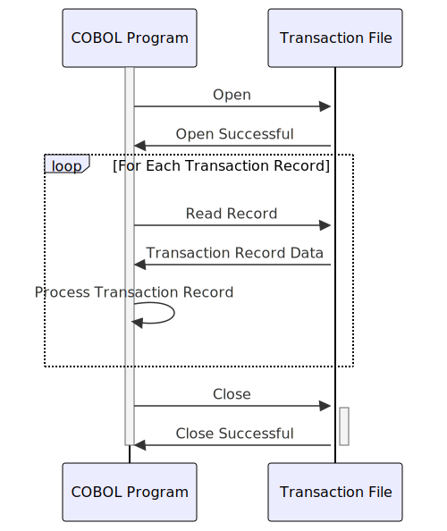

Gerado em: 1º de outubro de 2024
Título do Documento: Estrutura de Registro de Transação de Cartão de Crédito
Descrição Resumida: Este documento descreve a estrutura de um registro de transação de cartão de crédito dentro de um sistema financeiro baseado em COBOL. Ele define os campos de dados, seus formatos e suas finalidades, garantindo a captura de dados de transação padronizada e consistente.
Histórias do Usuário: Como analista financeiro, preciso de uma maneira padronizada de acessar e analisar dados de transações de cartão de crédito para que eu possa gerar relatórios precisos, identificar tendências e tomar decisões de negócios informadas.
Épico Relacionado: 4 - Processamento de Transações
Requisitos Técnicos:
CVTRA05Y.TRAN-ID: Um identificador exclusivo para cada transação, definido como PIC X(16).TRAN-TYPE-CD: Um código de dois caracteres indicando o tipo de transação (por exemplo, “SA” para Venda, “CR” para Crédito), definido como PIC X(02).TRAN-CAT-CD: Um código numérico de quatro dígitos fornecendo uma categorização mais específica da transação (por exemplo, “5010” para compras de supermercado), definido como PIC 9(04).TRAN-SOURCE: Um código de dez caracteres indicando a origem da transação (por exemplo, “POS”, “Online”), definido como PIC X(10).TRAN-DESC: Uma breve descrição da transação, definida como PIC X(100).TRAN-AMT: O valor da transação, definido como PIC S9(09)V99 (com sinal, nove dígitos com duas casas decimais).TRAN-MERCHANT-ID: Um identificador exclusivo para o comerciante envolvido, definido como PIC 9(09).TRAN-MERCHANT-NAME: O nome do comerciante, definido como PIC X(50).TRAN-MERCHANT-CITY: A cidade do comerciante, definida como PIC X(50).TRAN-MERCHANT-ZIP: O CEP do comerciante, definido como PIC X(10).TRAN-CARD-NUM: O número do cartão de crédito usado para a transação, definido como PIC X(16).TRAN-ORIG-TS: A data e hora da transação original, definida como PIC X(26).TRAN-PROC-TS: A data e hora em que a transação foi processada pelo sistema, definida como PIC X(26).Modelos Relacionados:
tranId: StringtranTypeCd: StringtranCatCd: IntegertranSource: StringtranDesc: StringtranAmt: DecimalmerchantId: IntegermerchantName: StringmerchantCity: StringmerchantZip: StringcardNum: StringtranOrigTs: DateTimetranProcTs: DateTimeConfigurações:
Melhorias de Código:
TRAN-TYPE-CD, TRAN-CAT-CD e TRAN-SOURCE em relação a listas predefinidas ou tabelas de banco de dados para garantir a integridade dos dados.Melhorias de Segurança:
TRAN-CARD-NUM), para protegê-lo de acesso não autorizado.Diagrama Conceitual:
–Made by “Smart Engineering” (by Compass.UOL)–